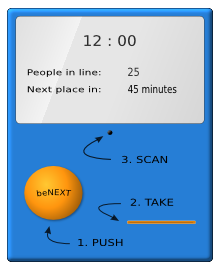
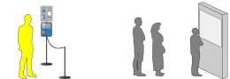
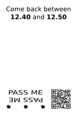
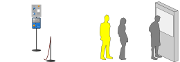
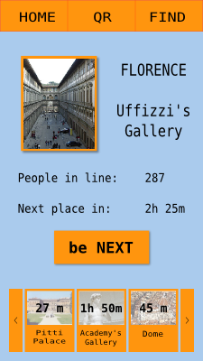

WHAT IS BENEXT ?
You must have experienced waiting in line for one hour or more. To enter a
museum, for instance, or to get to the desk of a public office. For some people
these waits are rare occurrences, for others they are the norm. But surely, they
are never pleasant and avoiding them would save us time and give us less stressful
days.
That is why I designed , a queue management system which, thanks to
last-minute booking method, shrinks hours long lines into five minutes ones.

This extraordinary reduction is made possible by a simple device:
the terminal.
Placed at the entrance of those facilities subject to the formation of a
queue, the terminal controls users' access imposing an admittance protocol.
Following it, users allow the terminal to organize the line in order to shrink
waiting times.
If it sounds difficult do not worry: ease of use has been the top priority
in designing .
The system in fact aims to become a replacement for the traditional line.
Therefore it must be equally simple and straightforward, since everyone has to be
able to to use it, the child as well as the elder.
Furthermore, for to be universally accessible, it's fundamental for
it to be bereft of user requirements. One can even be unaware of what is,
yet he will be able to use it and take advantage of the benefits it offers.
I will now explain in greater detail how works and how you would utilize it, examining three common situations in which it allows avoiding a long wait.

THE TICKET
Let's consider the ticket office of a big city's railway station. I will demonstrate with an example how can be used in this context.
Paul, the user, has to collect a refund from the railways. He hence heads to the aforesaid office, a notoriously crowded place, with waiting times ranging from twenty minutes to one hour and a half. Suppose Paul arrives at the station at noon and finds a forty-five minute wait to get to the desk.
Traditionally, a physical line would form which Paul must join and which would take him, after 45 minutes of slow progress, to the front. At 12.45 that is. However, the station has adopted . At the entrance of the station, Paul thus finds the terminal we've seen before, equipped with instructions that read: 
Press the button
Collect the ticket
Come back at the indicated time
Pass the ticket in front of the terminal
(you will hear a confirmation sound)Join the line

Having read the sign, Paul presses the button and takes the ticket issued by the terminal, on which are printed a QR code and an indication:
"Come back between 12.40 and 12.50".
The terminal has now registered the user's booking. He will be identified by the QR code on the ticket. Paul is now free to leave the station and he decides to spend those 40/50 minutes to have lunch in a nearby cafe.

Between 12.40 adn 12.50 Paul returns to the ticket office's entrance, he
passes his ticket in front of the terminal
and gets admitted to a 5-minute line for the desk, which he will reach at 12.45.
The clear advantage is that he didn't have to wait in line the whole time.
He could, as he did, wander off without worrying, because
guaranteed getting him to the desk in five minutes at his return.
THE BADGE
If the ticket office example convinced you about the convenience and simplicity of , let me show you how it can result, in certain situations, even more useful, expeditious and straightforward.
Let's now take into consideration the reality of a historic city rich of museums, palaces, parks and, most of all, full of tourists. Here long waits are a daily habit. Masses of visitors wait hours at the entrances of the big touristic attractions in unorganized, interminable lines. To mitigate the formation of those lines and offer tourists a better experience, the city has decided to adopt .
The implementation deployed in this context is an extension of the one seen in the previous example. At the entrance of each cultural attraction a terminal is installed. These terminals regulate the entry to the establishments, mandating the access protocol seen before through which the tourist can arrive at the place of interest, press the button on the terminal, pick up the ticket, return at the time written on the ticket and gain access to the short queue.
Moreover the visitor has the possibility of buying a badge which allows him to book himself into any of the establishments served by . Let me show you how.
Paul is now in the shoes of the tourist, and he scheduled visiting a handful of museums and palaces in our hypothetical city. Once arrived in the city he enters the nearest bookstall and asks the retailer for a badge. The seller hands him the small plastic rectangle which costs - say - 5 euros, and informs him that the price of the badge will be deducted from the entry fee of the first attraction he visits.
Paul now walks towards the first museum on his list, in front of which he finds the familiar terminal. Instead of pressing the button, Paul passes his badge in front of the device which registers the booking and prints a ticket indicating the interval at which he must return to gain entry. This time there isn't any QR code on the ticket, which serves only as a reminder. In fact, the user is identified by the QR code imprinted on the badge.
At the time written on the ticket Paul goes back to the museum, passes his badge in front of the terminal and gets in. After a 5-minute line for the desk, Paul buys the entry for the museum, obtaining the 5 euros deduction he was due. Without he would have had to stand in line for at least one hour and a half.
THE APP
In the two previous situations the user, in order to book for a place in line, had to physically go to the terminal and press the button or pass the badge. However, booking is an action that can easily be performed remotely using, for instance, a smartphone. Therefore, offers this possibility with an app and a website through which you can book yourself into every line managed by the system. Let me demonstrate you, once again with an example, the simple procedure necessary to access a queue using the app.
 Let's go back to our friend Paul visiting the historic city. After buying the badge Paul takes off his smartphone, launches the app and scans the QR code on the badge. The app adds him to the tourists network of that city enabling him to book for a place into any line served by .
Once booked for an attraction, the app shows the time interval in which Paul must return to gain access. For that, he has to simply pass his badge in front of the terminal, as he would have done in the previous situation. Alternatively, he can launch the app and scan a QR code that appears on the terminal. From the app a confirmation code will be sent through the internet to the terminal, which will allow Paul in.
Paul can even skip buying the badge. In fact, the app allows him to purchase the ticket directly. Thus he can now buy, book and access attractions with his smartphone, and the stressful, hours long waits are replaced by a handful of touches.
INDIEGOGO
is a project carried on by a one-man company. I - funder and developer - work full time trying to bring it to life.
However, like all projects in production, does not generate any revenue and I am therefore raising funds which will allow me to complete it as soon as possible. I hence decided to turn to indiegogo, a crowd-funding platform which allows everyone to sponsor small projects like mine through donations.
Raised funds will be used for:
- realizing a working prototype of a terminal
- hire professionals needed to work on the non-coding related parts of , such as a designer, an UX-specialist, a hardware engineer.
- cover the expenses for promoting the product (once completed)
If what offers piqued your interest and you'd like to be able to take advantage of the benefits, you can help me bring it to life by contributing a small sum at the homepage of the project on indiegogo.
FAQ
If you have any questions regarding , feel free to send me an email at info@lastminutelines.com. Alternatively, you can use the form down below. I will be happy to answer you as soon as possible. Furthermore, the most frquently asked questions will be published on this page, with their answer of course.
Your question has been send. Thank you
TextAddress for the reply
QUESTION
Will support non-physical things like over-the-phone support queues?
WHO AM I ?
Here is a very very brief description of me.